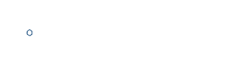

<mat-toolbar class="bg-white">
  <a target="_blank" href="https://www.fleni.org.ar/">
    
  </a>
  <div *ngIf="isLoggedIn()">
    <button mat-icon-button [matMenuTriggerFor]="menu" aria-label="Example icon-button with a menu">
      <mat-icon>menu</mat-icon>
    </button>
    <mat-menu #menu="matMenu">
      <button mat-menu-item>
        <mat-icon>account_circle</mat-icon>
        <span>{{getname()}}</span>
      </button>
      <button mat-menu-item (click)="logout()" *ngIf="isLoggedIn()">
        <mat-icon>exit_to_app</mat-icon>
        <span>Cerrar sesión</span>
      </button>
    </mat-menu>
  </div>
</mat-toolbar>